25+ Easy Christmas Crockpot Recipes
📌 Save to Pinterest
Christmas dinner does not need an oven full of dishes and a cook stuck at the stove. This roundup gathers twenty-five easy Christmas crockpot recipes — slow cooker mains, soups, sides and desserts that cook themselves while you decorate the tree, wrap gifts or welcome guests. Load the slow cooker in the morning, set it to low, and come back to a holiday table that is ready when you are.
How to plan a hands-off Christmas dinner
Start with one showpiece main — a glazed ham, a turkey breast or a brisket — and let the slow cooker hold it warm until serving time. Add a soup that simmers all day, one or two sides that free up the oven, and a dessert that sets while you eat dinner. If you are feeding a crowd, pick recipes that hold well on warm, like soups, braised meats and mashed vegetables, and set out the sides buffet-style so everyone serves themselves. And if you only have one slow cooker, cook the main first and keep it warm in the oven while a soup or side takes its turn.
Good to know: Everything is written in American English, and measurements use US customary units — cups, tablespoons, and Fahrenheit — for cooks in the United States. Always follow safe food-handling guidance, and check labels for allergens when cooking for others.
Food safety: cook poultry to 165°F (74°C), ground meat and sausage to 160°F (71°C), and whole cuts of beef, pork and lamb to 145°F (63°C) with a 3-minute rest. Cook fish to 145°F (63°C) and shrimp until opaque. Never cook frozen meat in a slow cooker — thaw it first — and keep the lid on while cooking so the slow cooker stays hot enough. Refrigerate leftovers promptly. Check with a food thermometer — see the USDA chart at foodsafety.gov.
Mains for the holiday table
The centerpieces — glazed ham, turkey breast, brisket, lamb and more, all cooked low and slow.
1. Slow Cooker Cranberry Glazed Ham

Sweet-tart cranberry glaze over juicy ham
Ingredients
- 1 spiral ham (7 lbs)
- 1 can (14 oz) cranberry sauce
- 1/2 cup brown sugar
- 2 tbsp Dijon mustard
- 1 tsp orange zest
- whole cloves
Directions
- Mix cranberry sauce, brown sugar, mustard and orange zest.
- Score the ham and stud with cloves.
- Pour the glaze over the ham in a slow cooker and cook on low 4 hours, basting twice.
- Slice and serve with the warm glaze.
Food safety: reheat the cooked ham to 140°F (60°C).
2. Slow Cooker Turkey Breast with Herb Butter

Juicy turkey breast, hands-off
Ingredients
- 1 bone-in turkey breast (5 lbs)
- 4 tbsp butter
- 3 garlic cloves
- 1 tbsp chopped rosemary
- 1 tbsp thyme
- 1 lemon
- salt and pepper
Directions
- Mix butter with garlic, rosemary and thyme.
- Rub under and over the turkey skin.
- Place lemon halves in the slow cooker and set the breast on top.
- Cook on low 5 hours until the juices run clear.
- Rest 15 minutes before slicing.
Food safety: cook the turkey to 165°F (74°C) — check with a food thermometer.
3. Slow Cooker Beef Brisket with Cranberry Barbecue Sauce

Tender brisket in a festive sauce
Ingredients
- 1 beef brisket (4 lbs)
- 1 cup barbecue sauce
- 1 can (14 oz) cranberry sauce
- 2 tbsp brown sugar
- 1 onion
- 2 garlic cloves
- 1 tsp smoked paprika
Directions
- Mix barbecue sauce, cranberry sauce, brown sugar, onion, garlic and paprika.
- Place the brisket in a slow cooker and pour the sauce over it.
- Cook on low 8 hours until tender.
- Slice against the grain and spoon the sauce over the top.
Food safety: cook the beef to at least 145°F (63°C) — brisket is done when tender.
4. Slow Cooker Lamb Shanks with Rosemary
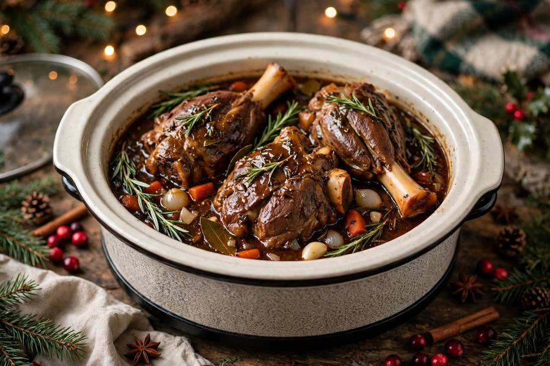
Fall-off-the-bone lamb in rich gravy
Ingredients
- 4 lamb shanks
- 2 cups beef broth
- 1 onion
- 4 garlic cloves
- 2 tbsp tomato paste
- 1 tbsp rosemary
- 2 carrots
Directions
- Brown the shanks in a skillet.
- Add broth, onion, garlic, tomato paste, rosemary and carrots to a slow cooker.
- Cook on low 7 hours until the meat falls off the bone.
- Serve with the cooking liquid spooned over.
Food safety: cook the lamb to 145°F (63°C) and let it rest for 3 minutes before serving.
5. Slow Cooker Chicken Cacciatore
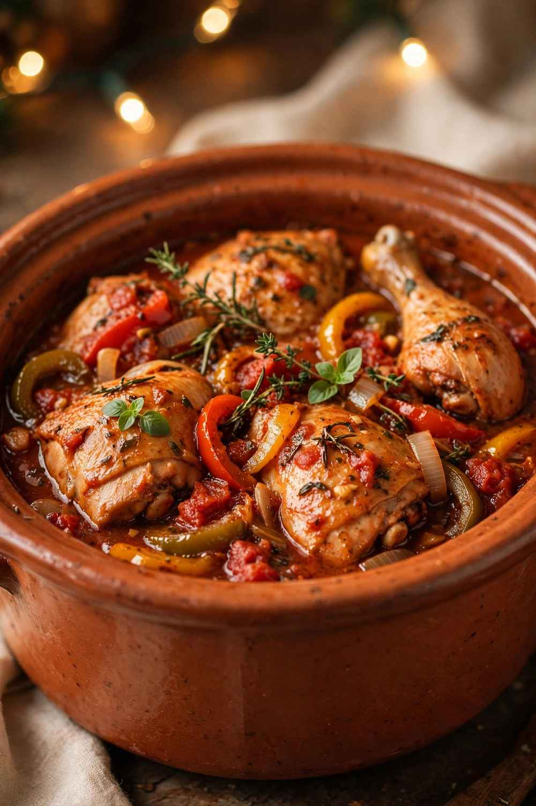
Chicken braised with peppers and tomatoes
Ingredients
- 4 lbs bone-in chicken thighs
- 1 can (28 oz) crushed tomatoes
- 1 bell pepper
- 1 onion
- 4 garlic cloves
- 1 tsp oregano
- 1/2 tsp red pepper flakes
Directions
- Brown the chicken in a skillet.
- Add tomatoes, pepper, onion, garlic, oregano and red pepper flakes to a slow cooker.
- Cook on low 6 hours until the chicken is tender.
- Serve over pasta or rice.
Food safety: cook the chicken to 165°F (74°C) — check with a food thermometer.
6. Slow Cooker Pork Loin with Apple Cider

Juicy pork in sweet cider
Ingredients
- 1 pork loin (3 lbs)
- 2 cups apple cider
- 2 apples
- 1 onion
- 2 tbsp Dijon mustard
- 1 tsp sage
- 2 garlic cloves
Directions
- Rub the pork with mustard, sage, salt and pepper.
- Place apples, onion and garlic in a slow cooker; set the pork on top.
- Pour in the cider and cook on low 5 hours.
- Slice and serve with the apples and cooking liquid.
Food safety: cook the pork to 145°F (63°C) and let it rest for 3 minutes before slicing.
7. Slow Cooker Salmon in Creamy Dill Sauce

Gentle-cooked salmon, creamy dill
Ingredients
- 2 lbs salmon fillet
- 1 cup heavy cream
- 2 tbsp chopped dill
- 1 lemon
- 2 garlic cloves
- 1 tbsp butter
- salt and pepper
Directions
- Season the salmon and place it in a slow cooker.
- Whisk cream, dill, lemon juice and garlic; pour over the salmon.
- Cook on low 2 hours until the flesh is opaque.
- Serve with the sauce spooned over.
Food safety: cook the salmon to 145°F (63°C), or until the flesh is opaque and flakes easily.
8. Slow Cooker Shrimp and Sausage Jambalaya
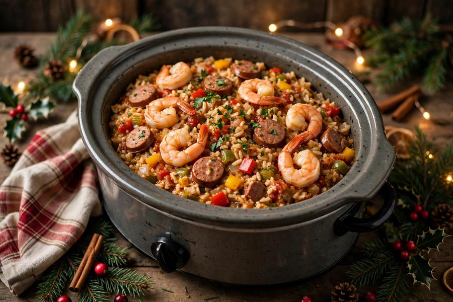
Smoky, spicy rice for a crowd
Ingredients
- 1 lb shrimp
- 1 lb smoked sausage
- 2 cups long-grain rice
- 1 can (14 oz) diced tomatoes
- 1 bell pepper
- 1 onion
- 2 cups chicken broth
- 1 tbsp Cajun seasoning
Directions
- Brown the sausage and add it to a slow cooker with rice, tomatoes, pepper, onion, broth and seasoning.
- Cook on low 3 hours.
- Stir in the shrimp and cook 20 more minutes until pink.
- Fluff and serve.
Food safety: cook the sausage to 160°F (71°C) and the shrimp until the flesh is pearly and opaque.
Soups that simmer all day
Start these in the morning and ladle them out when the table is set — rich, warming bowls for a cold Christmas night.
9. Slow Cooker Butternut Squash Soup

Silky, spiced and warming
Ingredients
- 1 butternut squash
- 1 onion
- 2 carrots
- 4 cups vegetable broth
- 1 tsp cinnamon
- 1/2 tsp nutmeg
- 1/2 cup heavy cream
Directions
- Peel and cube the squash; add it to a slow cooker with onion, carrots, broth, cinnamon and nutmeg.
- Cook on low 6 hours.
- Blend until smooth and stir in the cream.
- Serve warm.
10. Slow Cooker Garlic Butter Chicken Thighs

Rich garlic butter over tender thighs
Ingredients
- 8 bone-in chicken thighs
- 4 tbsp butter
- 6 garlic cloves
- 1 tsp thyme
- 1/2 cup chicken broth
- juice of 1 lemon
- salt and pepper
Directions
- Brown the thighs skin-side down in a skillet.
- Melt butter with garlic and thyme; pour over the chicken in a slow cooker with broth and lemon juice.
- Cook on low 5 hours until tender.
- Spoon the butter over the top before serving.
Food safety: cook the chicken to 165°F (74°C) — check with a food thermometer.
11. Slow Cooker Cheesy Potato Soup
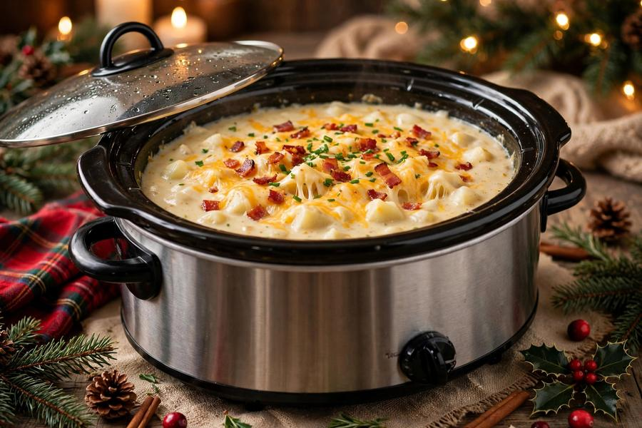
Creamy, cheesy comfort in a bowl
Ingredients
- 6 potatoes
- 1 onion
- 4 cups chicken broth
- 2 cups shredded cheddar
- 1 cup heavy cream
- 1 tsp garlic powder
- chopped chives
Directions
- Peel and dice the potatoes; add them to a slow cooker with onion, broth and garlic powder.
- Cook on low 6 hours.
- Mash lightly, then stir in cheddar and cream until melted.
- Top with chives.
12. Slow Cooker Beef and Barley Soup
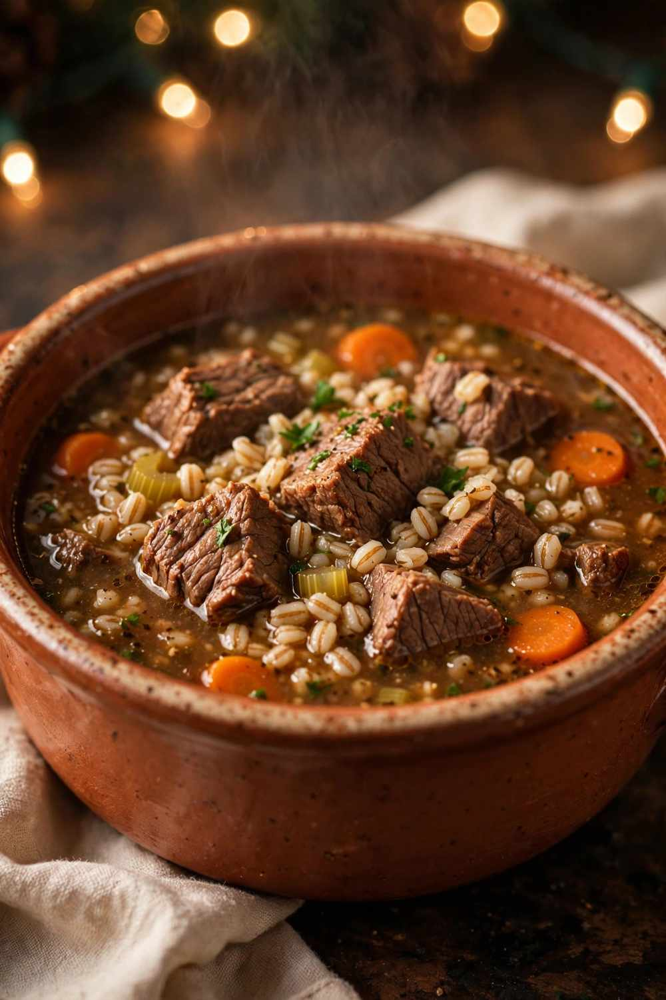
Hearty beef, tender barley
Ingredients
- 1 lb beef stew meat
- 3/4 cup pearl barley
- 3 carrots
- 2 celery stalks
- 1 onion
- 6 cups beef broth
- 2 tbsp tomato paste
- 1 tsp thyme
Directions
- Brown the beef in a skillet.
- Add beef, barley, carrots, celery, onion, broth, tomato paste and thyme to a slow cooker.
- Cook on low 7 hours until the beef and barley are tender.
- Season and serve.
Food safety: cook the beef to 145°F (63°C).
13. Slow Cooker Chicken Tortilla Soup

Smoky, zesty and topped with crunch
Ingredients
- 2 chicken breasts
- 1 can (14 oz) diced tomatoes
- 1 can (15 oz) black beans
- 1 cup corn
- 1 onion
- 4 cups chicken broth
- 1 tbsp chili powder
- 1 tsp cumin
- tortilla strips
- lime
Directions
- Add chicken, tomatoes, beans, corn, onion, broth, chili powder and cumin to a slow cooker.
- Cook on low 6 hours.
- Shred the chicken and stir it back in.
- Serve with tortilla strips and lime wedges.
Food safety: cook the chicken to 165°F (74°C) — check with a food thermometer.
14. Slow Cooker Split Pea Soup with Ham
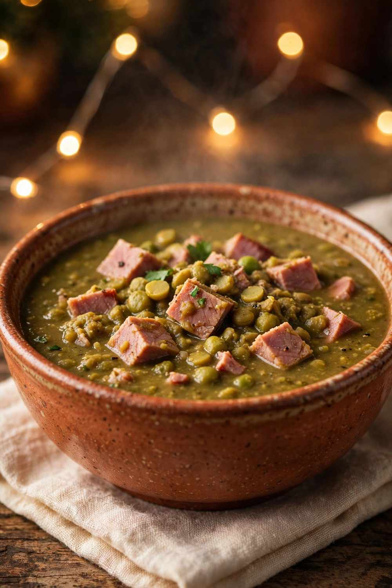
Thick, smoky and old-fashioned
Ingredients
- 1 lb dried split peas
- 2 cups diced ham
- 2 carrots
- 2 celery stalks
- 1 onion
- 6 cups chicken broth
- 1 tsp thyme
- 1 bay leaf
Directions
- Rinse the peas and add them to a slow cooker with ham, carrots, celery, onion, broth, thyme and bay leaf.
- Cook on low 8 hours until the peas break down.
- Remove the bay leaf and stir before serving.
15. Slow Cooker Corn Chowder with Bacon

Sweet corn, smoky bacon
Ingredients
- 4 cups corn kernels
- 4 potatoes
- 6 slices bacon
- 1 onion
- 4 cups chicken broth
- 1 cup heavy cream
- 1 tsp thyme
Directions
- Cook the bacon until crisp; crumble and set aside.
- Add corn, potatoes, onion, broth and thyme to a slow cooker.
- Cook on low 6 hours.
- Stir in the cream and half the bacon; top with the rest.
Food safety: cook the bacon until crisp.
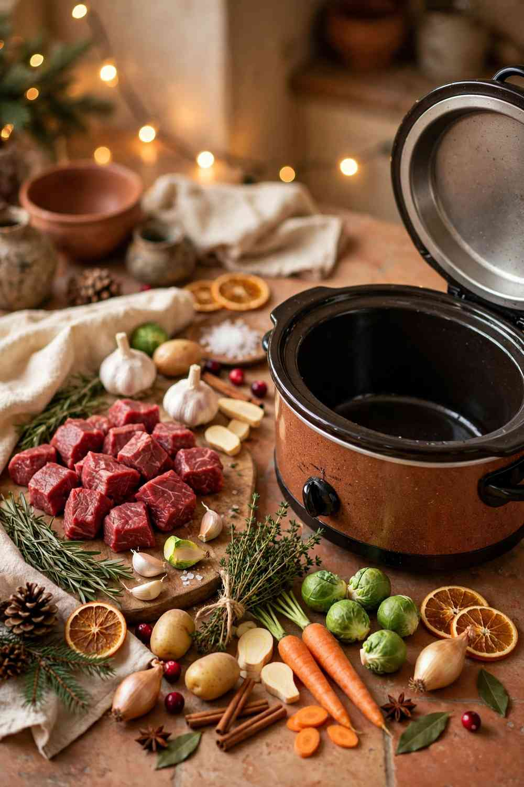
Sides from the slow cooker
Green beans, creamed corn, mac and cheese and more — sides that cook themselves while the oven stays free.
16. Slow Cooker Green Beans with Bacon and Brown Sugar

Sweet, smoky green beans
Ingredients
- 2 lbs green beans
- 6 slices bacon
- 1/2 cup brown sugar
- 2 tbsp butter
- 1 onion
- salt and pepper
Directions
- Cook the bacon until crisp; crumble and set aside.
- Add green beans, onion, butter and brown sugar to a slow cooker.
- Cook on low 4 hours.
- Stir in the bacon before serving.
Food safety: cook the bacon until crisp.
17. Slow Cooker Creamed Corn
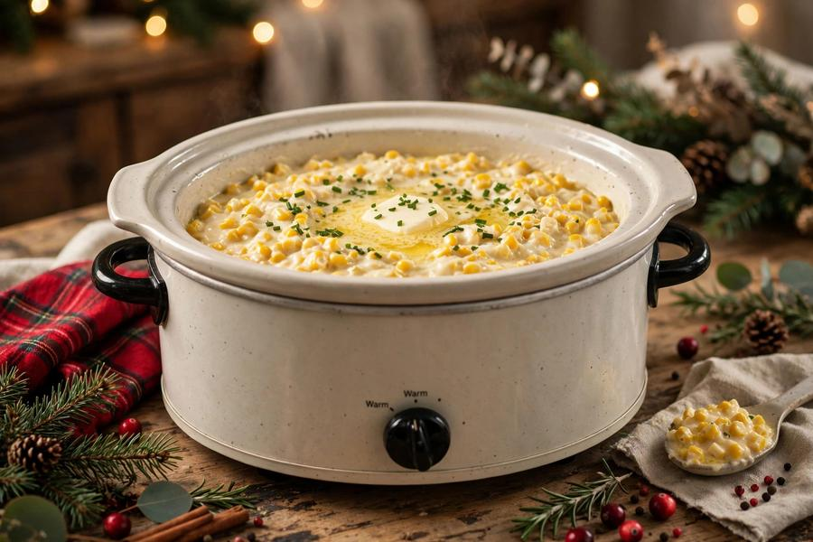
Sweet corn in a rich cream sauce
Ingredients
- 4 cups corn kernels
- 8 oz cream cheese
- 1/2 cup heavy cream
- 2 tbsp butter
- 1 tbsp sugar
- salt and pepper
Directions
- Add corn, cream cheese, cream, butter and sugar to a slow cooker.
- Cook on low 3 hours, stirring once.
- Season and serve warm.
18. Slow Cooker Mac and Cheese

Extra-creamy, no-boil mac and cheese
Ingredients
- 16 oz elbow macaroni
- 3 cups shredded cheddar
- 2 cups milk
- 1 cup evaporated milk
- 4 tbsp butter
- 1/2 tsp mustard powder
- salt and pepper
Directions
- Add macaroni, cheddar, milk, evaporated milk, butter and mustard powder to a slow cooker.
- Cook on low 2 hours, stirring twice.
- Serve as soon as the sauce is creamy.
19. Slow Cooker Mashed Carrots and Parsnips
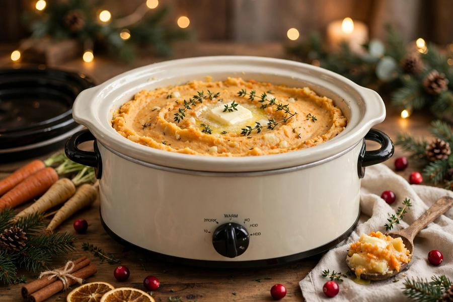
Sweet, buttery mash
Ingredients
- 4 carrots
- 4 parsnips
- 4 tbsp butter
- 1/4 cup heavy cream
- 1 tsp honey
- salt and pepper
Directions
- Peel and chop the carrots and parsnips; add them to a slow cooker with butter and a splash of water.
- Cook on low 4 hours until very soft.
- Mash with cream and honey until smooth.
20. Slow Cooker Brussels Sprouts with Maple and Bacon
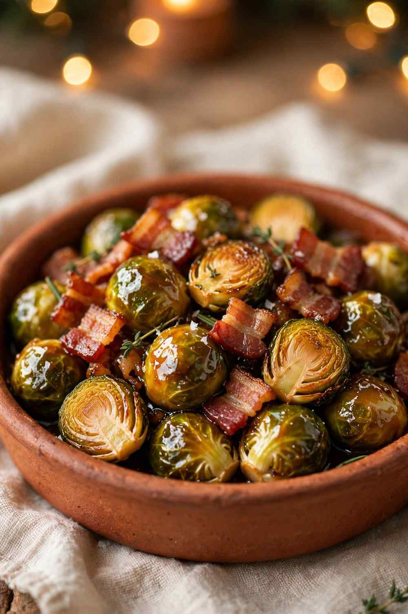
Sweet maple, smoky bacon
Ingredients
- 2 lbs Brussels sprouts
- 6 slices bacon
- 1/4 cup maple syrup
- 2 tbsp butter
- 1 tbsp balsamic vinegar
- salt and pepper
Directions
- Cook the bacon until crisp; crumble and set aside.
- Halve the sprouts and add them to a slow cooker with maple syrup, butter and vinegar.
- Cook on low 3 hours.
- Stir in the bacon before serving.
Food safety: cook the bacon until crisp.
Desserts and sweet finishes
Pear sauce, apple butter, bread pudding and lava cake — sweet endings that need no oven at all.
21. Slow Cooker Spiced Pear Sauce
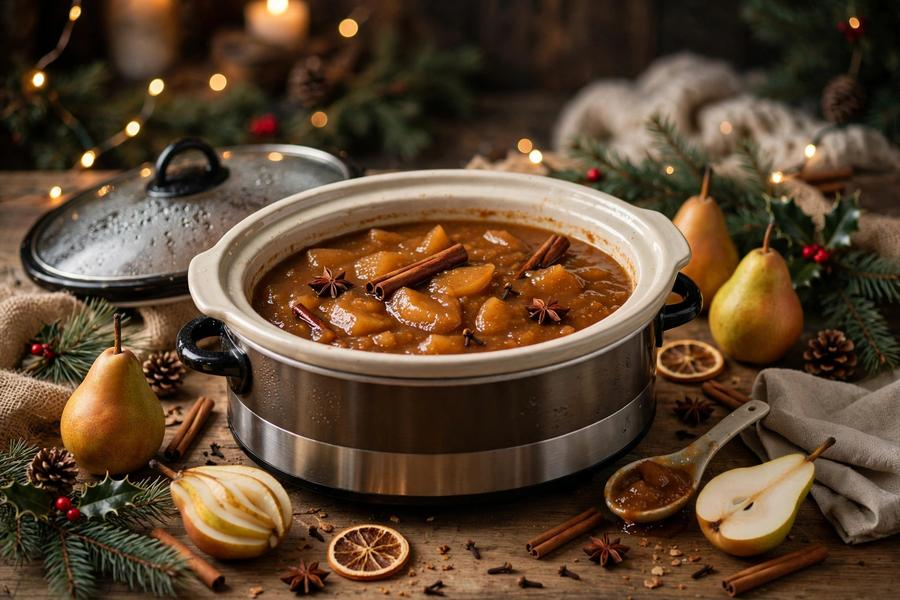
Warmly spiced, spoonable pears
Ingredients
- 6 pears
- 1/2 cup sugar
- 1 tsp cinnamon
- 1/2 tsp ginger
- 1 tbsp lemon juice
- 1 tsp vanilla
Directions
- Peel, core and chop the pears; add them to a slow cooker with sugar, cinnamon, ginger and lemon juice.
- Cook on low 4 hours.
- Mash lightly and stir in the vanilla.
- Serve warm or chilled.
22. Slow Cooker Apple Butter
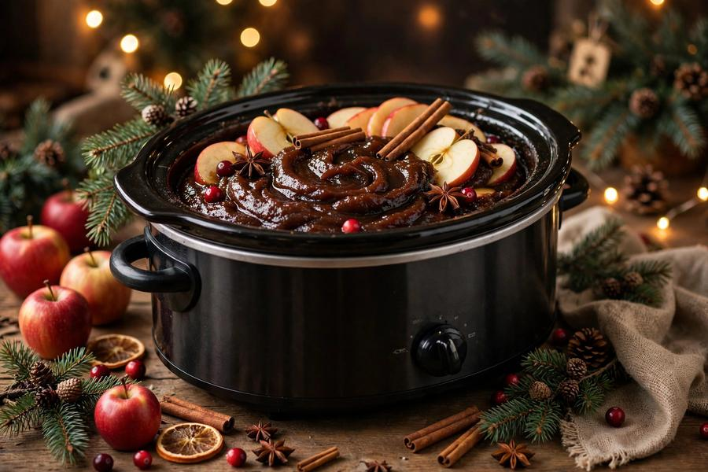
Deep, spiced apple spread
Ingredients
- 6 lbs apples
- 2 cups sugar
- 2 tsp cinnamon
- 1/2 tsp nutmeg
- 1/4 tsp cloves
- 1 tbsp vanilla
Directions
- Peel, core and slice the apples; add them to a slow cooker with sugar and spices.
- Cook on low 10 hours, stirring once.
- Blend until smooth and stir in the vanilla.
- Cool and store in jars.
23. Slow Cooker Gingerbread Bread Pudding
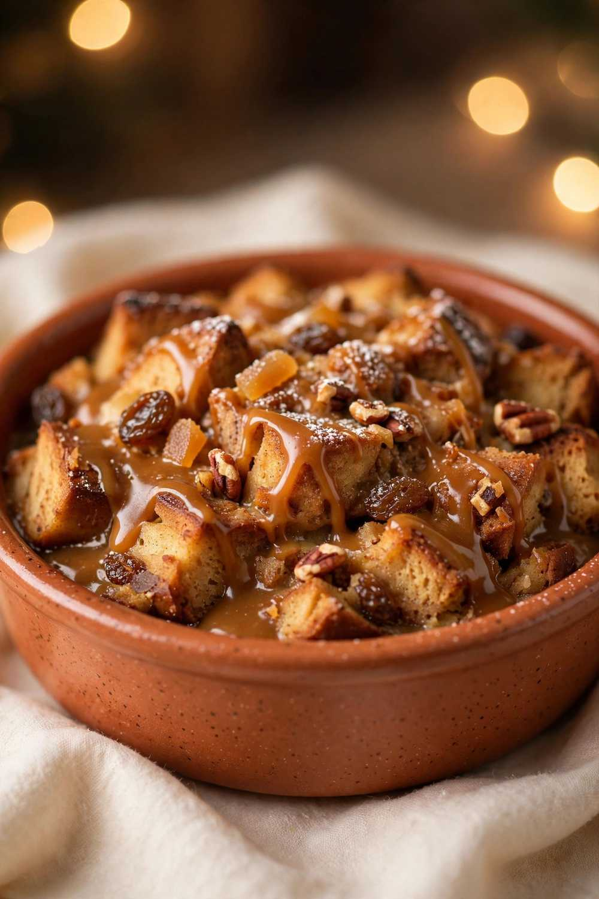
Spiced, custardy holiday pudding
Ingredients
- 8 cups cubed gingerbread
- 4 eggs
- 2 cups milk
- 1/2 cup brown sugar
- 1 tsp vanilla
- 1 tsp cinnamon
- 1/2 cup raisins
Directions
- Whisk eggs, milk, brown sugar, vanilla and cinnamon.
- Toss the gingerbread cubes and raisins in a greased slow cooker; pour the custard over.
- Cook on low 3 hours until set.
- Serve warm with cream.
Food safety: cook until the eggs are set — egg dishes should reach 160°F (71°C).
24. Slow Cooker Chocolate Lava Cake

Gooey chocolate center, no oven needed
Ingredients
- 1 box chocolate cake mix
- 3 eggs
- 1/2 cup oil
- 1 cup water
- 1 box (3.9 oz) chocolate pudding mix
- 2 cups milk
- 1 cup chocolate chips
Directions
- Mix the cake mix, eggs, oil and water; pour into a greased slow cooker.
- Whisk the pudding mix with milk and pour over the batter.
- Sprinkle with chocolate chips.
- Cook on low 3 hours; the edges set while the center stays gooey.
- Serve warm.
Food safety: cook until the edges are set — egg dishes should reach 160°F (71°C).
25. Slow Cooker Rice Pudding with Cinnamon
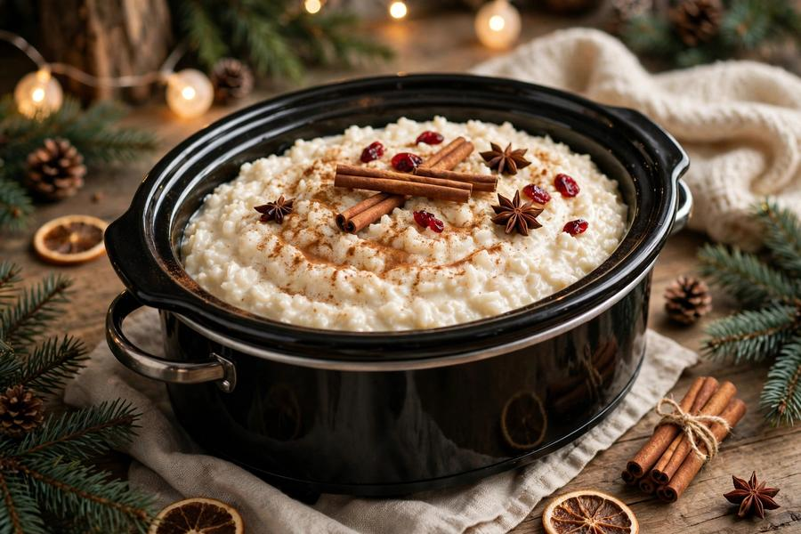
Creamy, old-fashioned rice pudding
Ingredients
- 1 cup arborio rice
- 4 cups milk
- 2 eggs
- 1/2 cup sugar
- 1 tsp vanilla
- 1 tsp cinnamon
- 1/2 cup raisins
Directions
- Whisk milk, eggs, sugar, vanilla and cinnamon.
- Add rice and raisins to a greased slow cooker; pour the custard over.
- Cook on low 3 hours, stirring twice.
- Serve warm, dusted with cinnamon.
Food safety: cook until the eggs are set — egg dishes should reach 160°F (71°C).

Make-ahead & serving tips
Most of these recipes hold beautifully on the slow cooker's warm setting for an hour or two, so time dinner around your guests, not the other way around. Brown meats before they go in when the recipe calls for it — that sear is where the flavor comes from. Keep the lid on while cooking; every peek lets heat escape and adds cooking time. Leftovers keep covered in the fridge for up to 3 days — reheat soups and braises gently on the stove, and warm sliced ham and turkey in a little of their cooking liquid so they stay juicy.
Related articles
More roundups from the same table:
- 25+ Christmas Side Dishes for Your Holiday Table — roasted vegetables, creamy potatoes, stuffing and cranberry sauce.
- 20+ New Year's Eve Dinner Ideas for Family and Friends — festive mains, from roast beef and salmon to pasta and slow cooker favorites.
- 25+ Christmas Pie Recipes for a Sweet Holiday Table — classic apple, pumpkin and pecan pies plus festive tarts and hand pies for Christmas Day.
- 25+ Easy New Year's Eve Appetizers for a Crowd — bite-size party snacks, dips and finger foods for ringing in the New Year.
Keep exploring
- Browse the Lunch & Dinner roundups — mains and sides for midday and evening tables.
- Browse all six categories — breakfast, lunch and dinner, desserts, air fryer, healthy recipes, and appetizers.
- More about the kitchen — what The Tasty Recipe Co is and how it works.
About The Tasty Recipe Co: Learn how we research, organize and review our food collections — see our About Us and Editorial Policy pages.
Recipe results can vary with ingredients, equipment, and technique. See our Disclaimer for food-safety and allergy notes.